2025-2026学年七年级数学上学期第一次月考卷
强化卷·参考答案
一、选择题（本大题共10小题，每小题3分，共30分）
题号 | 1 | 2 | 3 | 4 | 5 | 6 | 7 | 8 | 9 | 10 |
答案 | D | A | B | A | D | C | B | D | B | A |
二、填空题（本大题共6小题，每小题3分，共18分）
11．
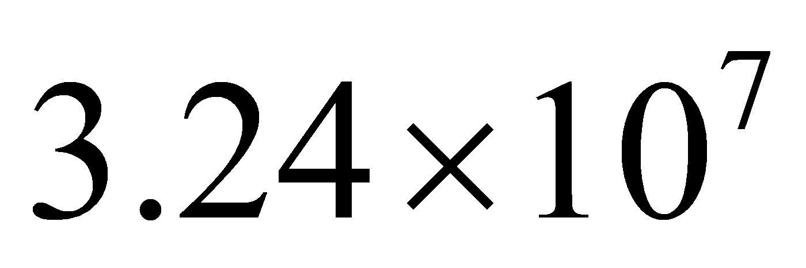
12．
13．
14．63
15．14
16．8或9或10
三、解答题（第17，18，19，20题，每题6分；第21，22，23题，每题8分；第24，25题，每题12分；共9小题，共72分）
17．
【详解】（1）解：
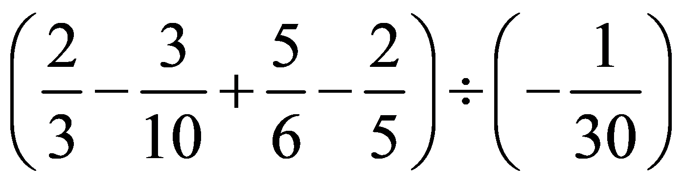


 ........................3分
........................3分
（2）


 ........................6分
........................6分
18．
【详解】（1）解：由 ，
， ，
， ，
， ，
，
∴非负数有 ，，
，， ，共
，共 个，
个，
故答案为：；........................1分
（2）解：由题意得和，到原点距离相等，
故答案为： 和；........................2分
和；........................2分
（3）解：如图所示：
 ........................4分
........................4分
∴ ．........................6分
．........................6分
19．
【详解】（1）解：两个立体图形的体积不相等；
所以同意小红的说法；
故答案为：小红；........................2分
（2）解：甲的体积：
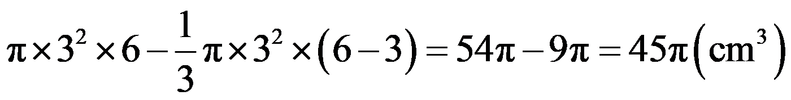
，乙的体积：
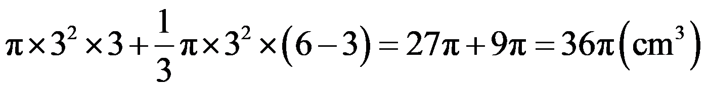
，∴ ．........................6分
．........................6分
20．
【详解】（1）解：2☆5=2×5−22−5+1=10−4−5+1=2；........................2分
（2）解：
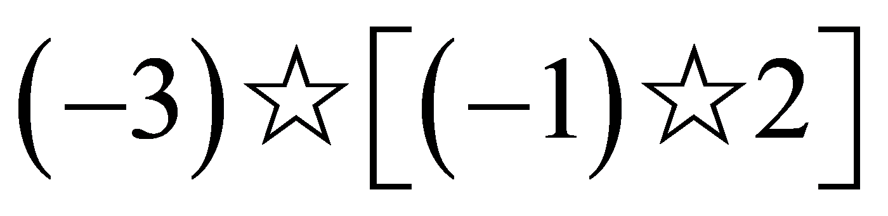


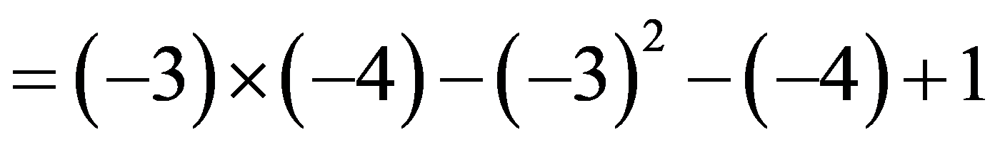
 ．........................6分
．........................6分
21．
【详解】（1）解：画图如下：
 ........................4分
........................4分
（2）解：几何体的表面积为 ；........................6分
；........................6分
（3）解：要保持从上面和左面观察到的形状图不变，则从前面看，从左到右第 列第行最多可增加块小正方体，第列第
列第行最多可增加块小正方体，第列第 行最多可增加块小正方体，第
行最多可增加块小正方体，第 列第行最多可增加个块正方体，
列第行最多可增加个块正方体，
∴最多可以添加
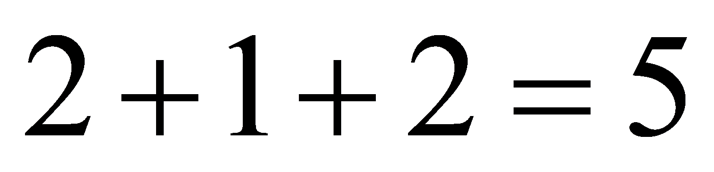
块小立方块．........................8分22．
【详解】（1）解： 千米，
千米，
即小李在出发点的北方1千米处；........................2分
（2）解：
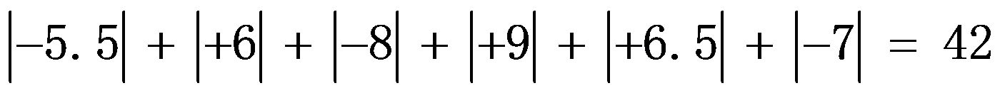
千米，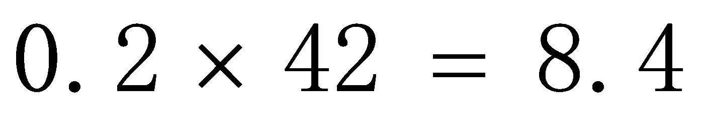
升，即出租车共耗油 升；........................5分
升；........................5分
（3）解：
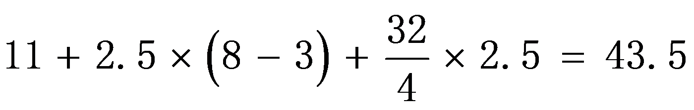
元，即第三位乘客需支付车费 元．........................8分
元．........................8分
23．
【详解】（1）解：当 时，
时，
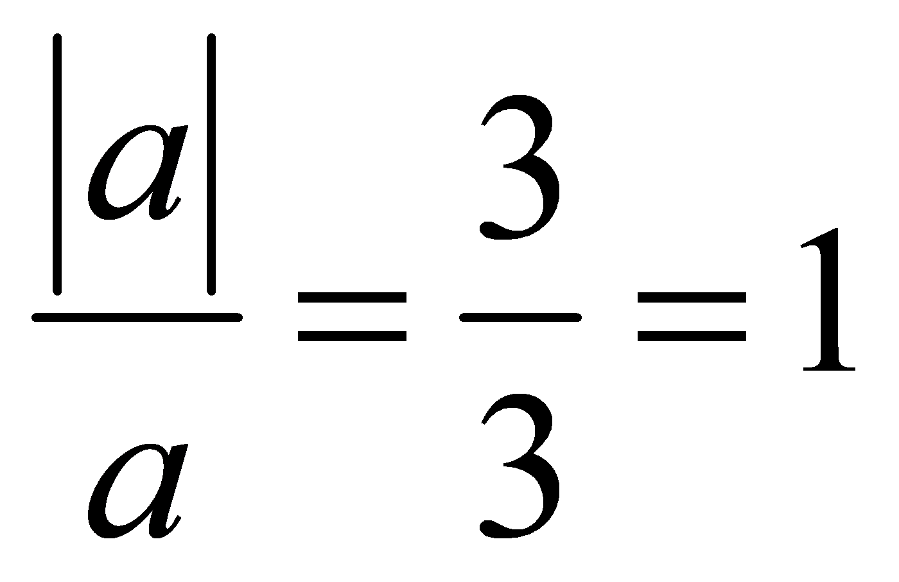
，当 时，
时，
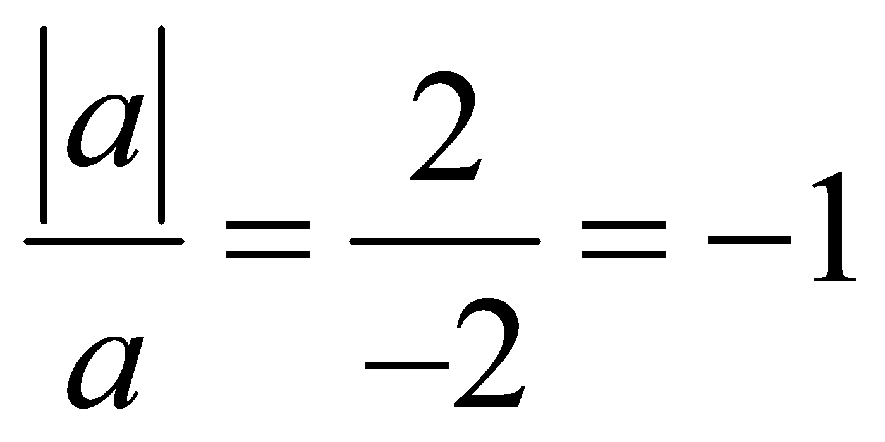
；........................2分（2）解：由 知，分两种情况：
知，分两种情况：
当
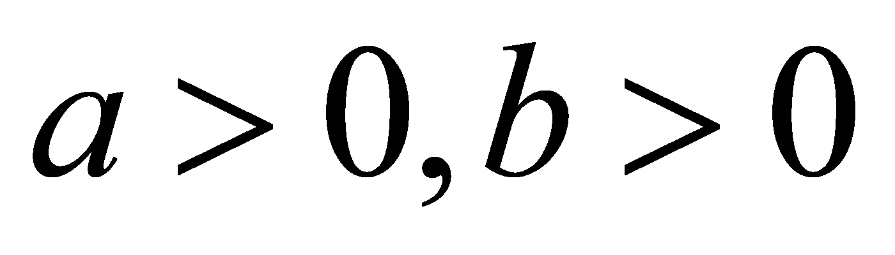
时， ；
；或 时，
时，
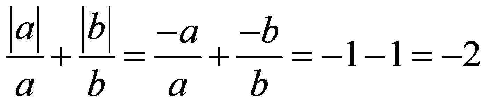
，故当时， 的值为
的值为
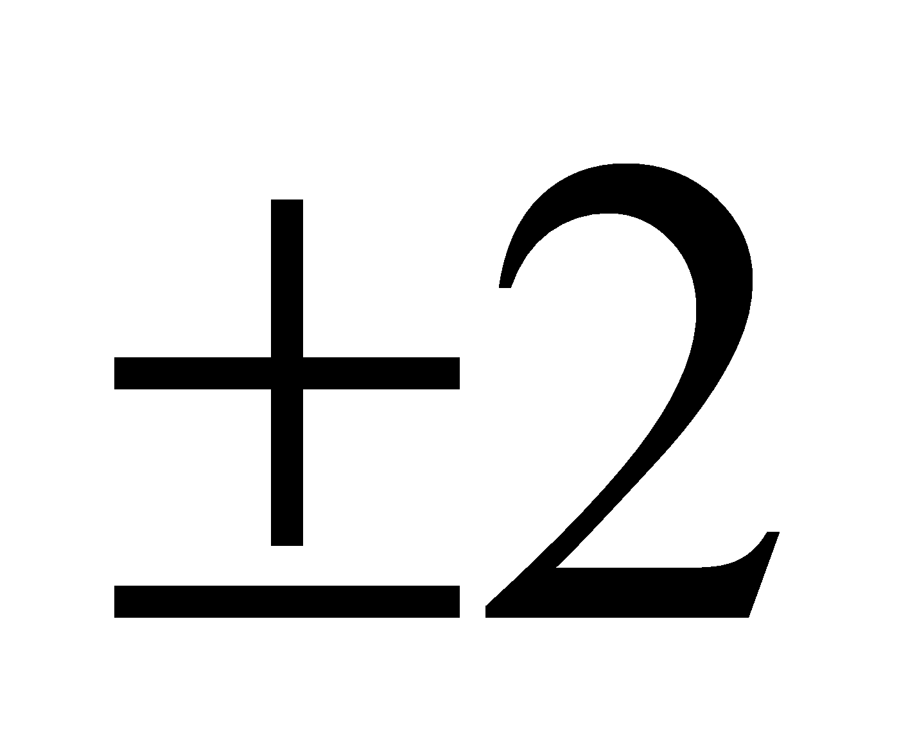
；........................5分（3）解：由 知，分两种情况：
知，分两种情况：
当a、b、c中有一个小于0，其它两个大于0时，
 ；
；
当a、b、c三个都小于0时，
 ，
，
综上，当时，
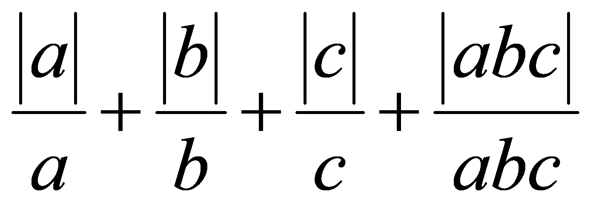
的值为0或 ．........................8分
．........................8分24．
【详解】（1）①
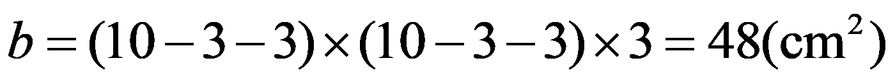
故答案为： ........................2分
........................2分
②根据表格中数据的对应值的变化关系可知，随着x的增大，纸盒的容积V变化情况是先增大后减小，
故答案为：C........................4分
（2）表格中的边长x与纸盒容积V变化情况可得：当 （x为整数）时，纸盒的容积最大，为
（x为整数）时，纸盒的容积最大，为
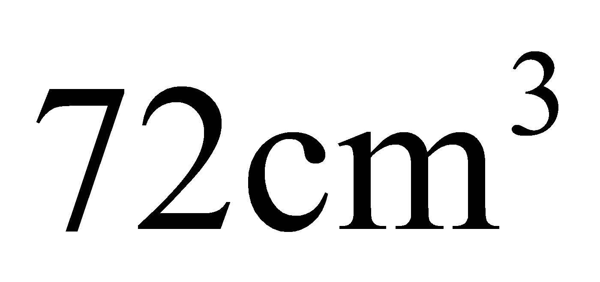
故答案为：
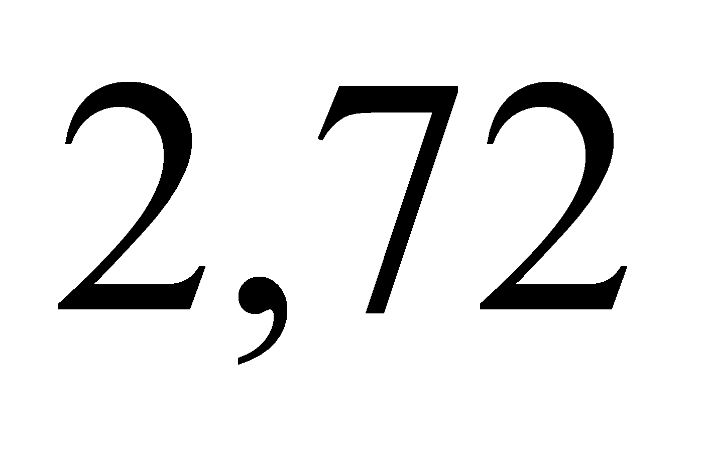
........................8分（3）由题意得：
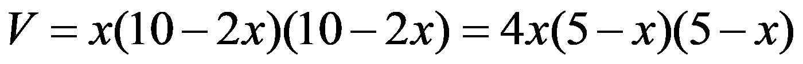
当 时，
时，

当 时，
时，

当 时，
时，

当
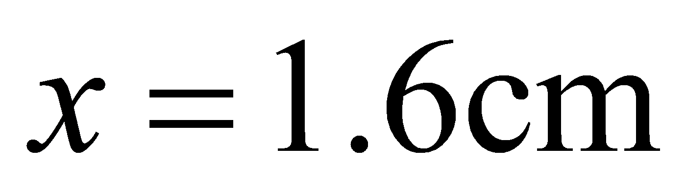
时，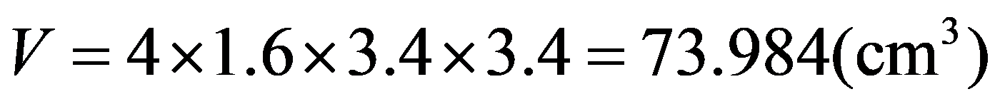
所以，当 时，
时， ........................12分
........................12分
25．
【详解】（1）解：①设点A，C的双倍绝对点对应应的数是b
∵ ，
， ，
，
∴ ，
，
解得 或
或 ，
，
∴点E是点 的双倍绝对点．
的双倍绝对点．
故答案为：E；........................4分
②∵，
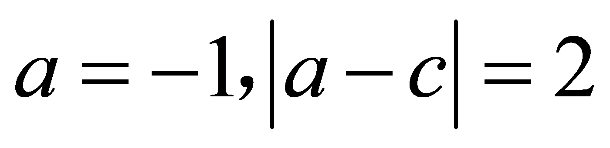
，∴ ，
，
解得 或3，
或3，
故答案为： 或3；.......................8分
或3；.......................8分
（2）∵
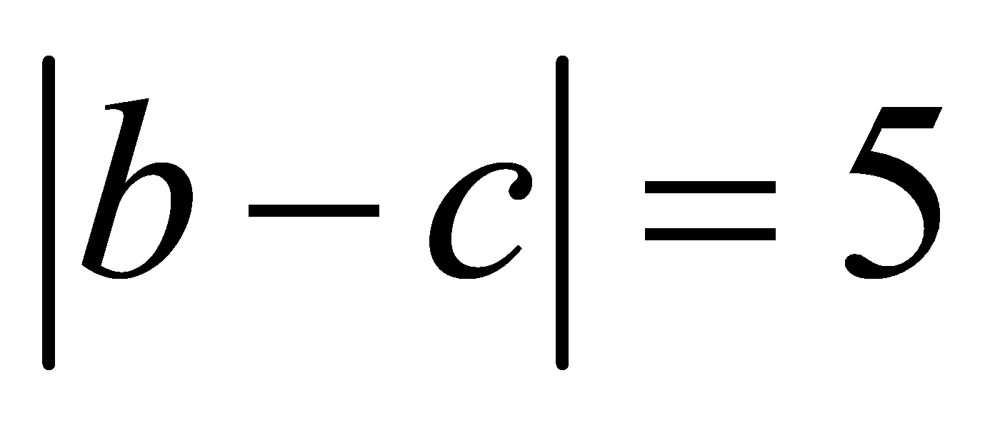
，∴ ，
，
∵，
∴ ，
，
①当点A在
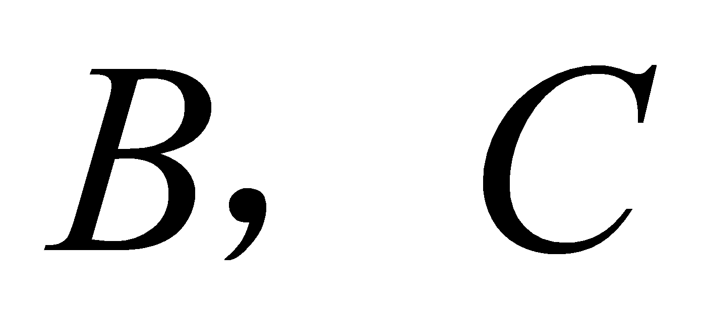
之间时， ，
，∴
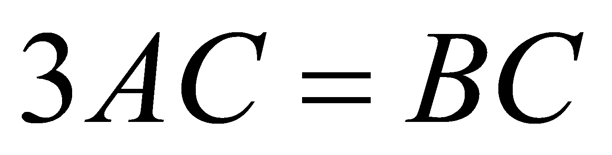
，即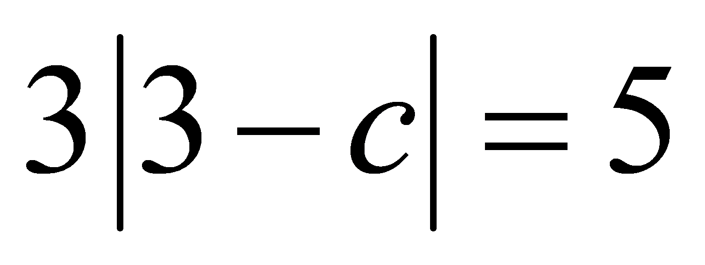
，解得
 或
或 ；
；
②当点A不在之间时， ，
，
∴
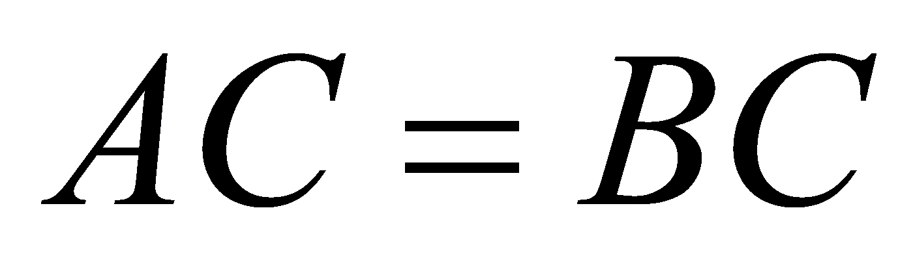
，即 ，
，解得 或8．
或8．
综上，c的值为 ，8，或．
，8，或．
故答案为：，8，或；........................12分